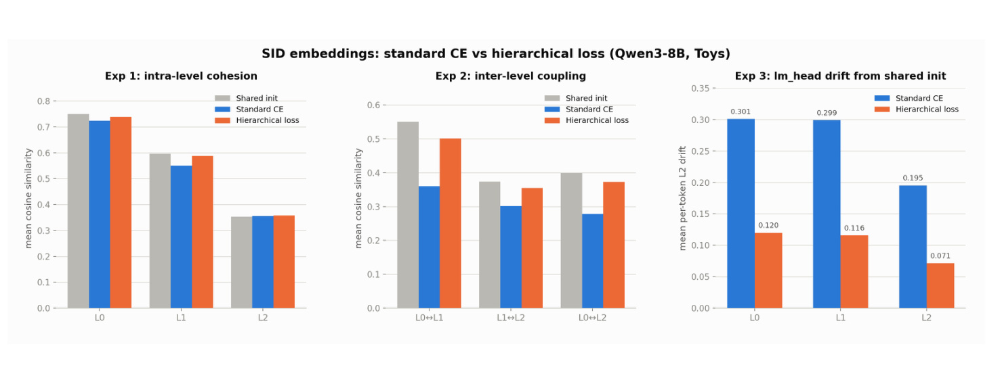
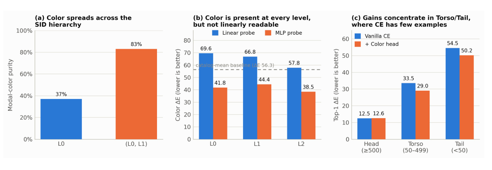
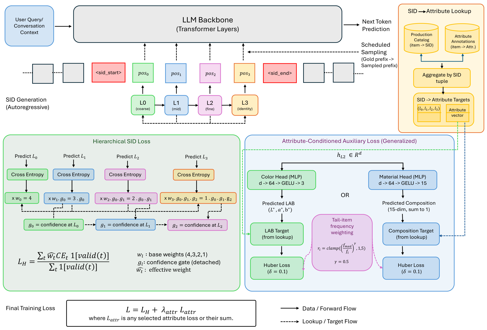
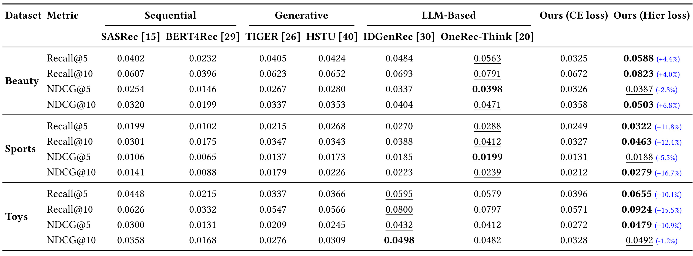
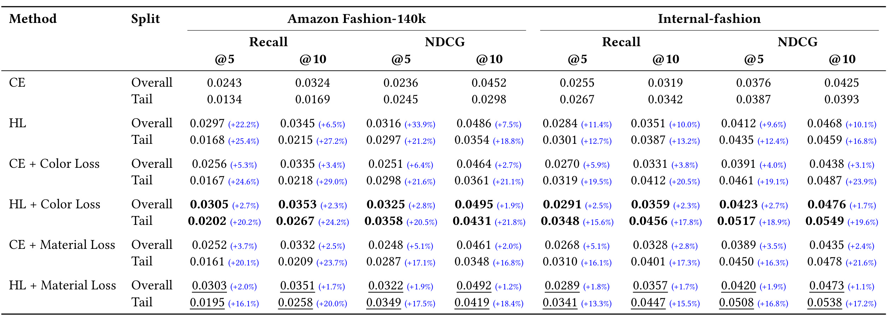
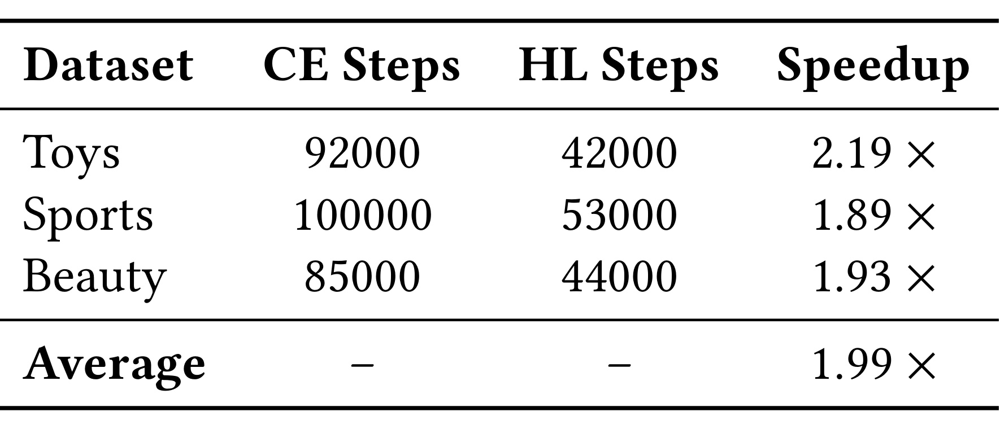
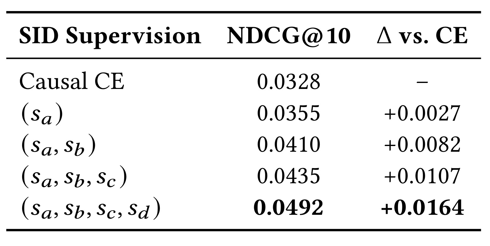
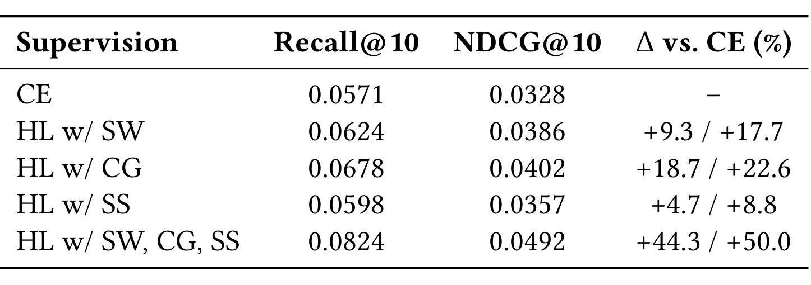

HASTE：为生成式推荐加入层级与属性监督
论文标题：HASTE: Hierarchical and Attribute-aware Supervision for Generative Recommendation。作者为 Tripti Shukla、Shwetha Somasundaram、Akshat Gupta、Rohit Garg、Paul Duff、Ian Anderson，机构均为 Glance。论文入口：arXiv:2610.17368。首版提交于 2026 年 10 月 12 日 20:25:50 UTC，即北京时间 10 月 13 日 04:25:50；属于本次扩展的最近七天窗口。本文依据 16 页首版 PDF 阅读，记录日期为 2026 年 10 月 19 日。代码/项目页状态：本轮未核验到独立代码入口。PDF 中会议名、年份、ISBN 和 DOI 存在 ACM 模板占位，不能据此认定已被会议接收。
原文研究问题：语义 ID 已由残差量化形成粗到细的结构，但统一的因果交叉熵没有显式利用各层错误的非对称影响；稀有商品还缺少能保留颜色、材质等细粒度属性的监督。作者试图在固定生成式推荐骨干上改变训练目标，同时改善收敛步数与长尾检索。
目录：
- 1. 背景和问题
- 2. 方法
- 2.1 层级监督的前向链路
- 2.2 在细粒度预测位置监督属性
- 3. 实验结果
- 3.1 三个公开域的主结果
- 3.2 属性监督与长尾
- 3.3 收敛步数与组件消融
- 3.4 复现口径与证据边界
- 4. 总结
1. 背景和问题
生成式推荐把下一商品召回变成序列生成：输入用户交互历史或带条件的对话，模型输出商品标识，再由目录映射得到商品。与独立商品向量检索相比，这条路线希望利用预训练语言模型的语义能力，并用一个骨干覆盖商品理解、顺序预测和属性检索。困难在于商品集合不是天然词汇，直接把随机商品号加入词表，模型仍要用稀疏行为重新学习每个号码。语义 ID 用内容表示量化成若干离散码，使相似商品共享前缀，从而把目录的一部分结构放到生成空间中。HASTE 的起点是：已经花计算构造了这种结构，训练目标是否仍把它当成普通等价 token 序列？
残差量化按顺序逼近商品向量。第一层选择粗码，第二层量化第一层剩余的残差，第三层进一步修正；后续码的含义依赖前缀。同一个末层码与不同粗码组合，未必表示相同商品属性。如果生成器在第一步选错大类，后面的正确细节也不能把商品拉回原先子树。最后一步出错则通常只影响局部区分。平坦交叉熵会监督每个位置，却没有明确表达“第一步错误影响整个后续条件”的非对称性。这是层级加权的技术动机，区别于仅提高全局学习率或增加训练轮数。
不过，语义层级不是人工产品分类树。它来自内容嵌入和量化器，既可能含商品类型，也可能混合品牌、风格、视觉和文本信息。早层一定比晚层更适合用户当前需求，并非由量化过程自动保证。HASTE 假设早层在生成路径上更重要，然后用较大权重保住这部分结构；这一选择能否改善推荐，需要下游指标检验。保留初始化几何本身不能替代召回或排序收益，因为初始化也可能包含内容偏差。阅读时应把“几何证据”和“推荐效用证据”分开，它们连接了作者的解释，但并非同一件事。

Figure 2 在 Toys、Qwen3-8B 上把共享初始化、普通 CE 和层级损失并排比较。左侧是各层内部平均余弦相似度，中间是层间耦合，右侧是输出嵌入相对初始化的平均逐 token 欧氏漂移。作者强调的数字是 L0 与 L1 的余弦耦合从初始化约 0.55 降到 CE 的 0.36，而层级损失保留在约 0.50；对应相对降幅约 35% 与 9%。这说明损失选择确实改变了表示演化，而非只在输出评测时换了解码规则。右侧三个层级中，层级损失的漂移柱都明显小于 CE，显示较强的初始化保持效应。图中左侧同层相似度在不同层本来就处于不同范围，读者应比较同一层的三种训练状态，不能把最细层柱子更低解释为该层更差。几何保持与多样性也存在张力，所有商品表示过于接近同样不利于细粒度检索。图中的层间相似度不能理解为“用户满意度”，也不能仅凭漂移小就判定学习更充分；模型可能既保留有益结构，也保留量化器的错误。比较共享初始化是必要控制，但还需要相同训练预算、多随机种子和下游分桶指标确认关系。对实际系统而言，这张图提示可以监测 SID 各层表示是否在全参训练中迅速失去共同语义空间，再决定是否引入约束。
另一个问题发生在单一属性上。残差量化通常优化整体重建，未要求某个 token 对应颜色、材质或版型。用户要求“酒红色羊毛开衫”时，颜色与成分需要在最终生成商品中同时兑现，整体语义近似并不能保证每个属性正确。头部商品出现频繁，可用行为梯度修正表示；尾部商品既少作为下一商品目标，也可能从未出现在颜色条件对话里。即使语言模型认识这些词，也不等于新加入的 SID 和相应隐藏状态已把知识对齐到具体目录。HASTE 因而加入目录属性监督，将外部可读的商品属性变成模型中间表示的训练信号。

Figure 3 的三个面板解释了为何选择细粒度状态加非线性头。左侧颜色纯度从只按 L0 分组的 37% 提升到按 L0、L1 前缀分组的 83%，表明颜色信息随更细的条件逐渐聚集；不能据此把 L0 或 L1 固定命名为颜色码。中间以颜色误差 ΔE 为纵轴，越低越好，虚线是目录均值预测的 56.3。各位置的线性探针都没有超过该基线，MLP 探针在 L2 达到 38.5，说明信息可被非线性读出，并非表示里完全没有颜色。右侧显示辅助颜色头的收益主要在 torso 与 tail：头部误差 12.5 到 12.6，几乎不改善；torso 从 33.5 到 29.0，tail 从 54.5 到 50.2。图上该颜色频次分桶是 head 至少 500、torso 为 50–499、tail 小于 50，不能和后文 Table 2 商品尾部切片直接混用。中间三个位置的MLP误差并非随层级严格单调下降，L1约44.4反而高于L0约41.8，说明探针结果支持具体选择L2，而不支持任何更深层都必然更好。还需控制探针容量和训练数据量，避免把更强读出器的拟合能力误当成骨干泛化。绝对颜色误差下降也不自动等价于用户偏好更匹配，但它比单纯主观展示更直接地验证了辅助目标确实进入表示。
附录还给出三个公开域的三元组碰撞率：Toys 约 2.6%、Beauty 约 3.7%、Sports 约 5.4%；Fashion-140k 与内部服饰约为 9.5% 与 6.5%。这些比例意味着“同一语义前缀下区分具体商品”并非小概率的纯实现问题。尤其 Fashion 子集沿用更大商品池训练的码本，子集内的相似度与码本最优划分未必一致。第四去重码在系统里解决身份唯一性，属性监督则试图解决细粒度语义可读性，二者负责的功能需要分别考察。
这两组动机分别对应结构和信息密度。层级损失调整“同一条 SID 路径里哪些预测先学好”；属性损失补足“行为样本少时还能从哪里得到商品区分信号”。二者都在训练阶段改变监督，不要求线上再跑一个属性模型筛选所有候选。这样有利于把增量复杂度集中到离线，但离线计算也并非免费，scheduled sampling 有额外前向，目录属性要持续清洗。论文没有把完整工业召回、排序、重排级联替换后的线上收益作为证据，其结论仍应限定在文中的生成推荐任务。
HASTE 与同团队的 FASHIONRQ 属不同论文：这里讨论的是固定 SID 训练时的监督组织，不能因作者或服饰数据相同就把两篇合并成同一成果。与 TIGER 的关系也应理解为继承语义 ID 表示，而非重新发明量化器；与 LC-Rec 一类任务对齐方法的差异在于重点修改已有任务损失和引入目录派生目标。对熟悉多任务推荐的读者，它的属性头并不陌生，值得精读的是自回归条件下的层级置信门、训练轨迹扰动和稀疏属性信号如何组合，以及这些细节是否真的有独立收益。
2. 方法
2.1 层级监督的前向链路
论文用 Qwen3-8B 承载对话与 SID 生成。SID 在主文写成四个码，以 L0 到 L3 表示；附录明确前三个来自各含 256 个码的 RQ-VAE，第四个是处理碰撞的去重码。不能把四个码都当成四次残差量化。语言模型先输入历史或查询，再依次预测粗到细的 SID；从用户序列到输出商品，生成概率仍按通常的条件概率分解，HASTE 改的是训练时对各位置交叉熵的权重。
符号解释：$x$ 是用户上下文，$i$ 是目标商品，$s_{i,l}$ 是商品在第 $l$ 层的真实码，$s_{i,<l}$ 是其前缀，$\theta$ 是模型参数；$\mathcal L_{\rm CE}$ 为未加层级权重的负对数似然。分解要求预测后层时已经看到前层，它本身不让第一层的错误承担更大的训练惩罚。推理最终将合法 SID 映射回目录商品，不把任意文本当作可售商品。

Figure 1 从上方的语言模型与自回归码链进入下方两条监督路径。左侧四个 CE 节点分别乘层级基权重和前序置信门；早层错误更昂贵，后层权重又取决于前缀是否可靠。右上方目录与属性注释先按 SID 连接、聚合，形成查表目标，避免依赖每次用户表达是否显式提到属性。右下方共享的 L2 预测隐藏状态进入颜色或材质 MLP，与相应目标计算 Huber 损失。实线表示数据前向，虚线表示查表或目标流，这帮助区分训练目标信息和模型推理可见输入。尤其要注意，属性目标来自完整目标 SID，但预测头读取的是生成细码前的上下文状态：目标可利用监督标签，不能在前向把目标属性泄漏给生成器。图中的颜色和材质分支可以选一或合并，正文主结果主要分别报告，并不足以断言联合训练一定最优。图中频率权重看似同时连到两属性，附录却明确材质不使用频率加权，复现应按任务分别核验。这里的属性查表与梯度门是两种不同的条件机制：前者决定样本监督标签，后者决定SID层级损失大小，不能把属性目标作为置信门的输入。右侧目标连接到损失而非用户输入，提示实现时严格保留标签侧与前向侧的隔离。模型若只在显式颜色对话上开头，就会失去作者强调的监督稠密化收益；但所有可解析SID位置都开头，又要求准确识别输入历史与目标输出的mask。多商品对话中每个SID该对应哪个属性标签尤其需要单元检查，否则辅助目标错位可能仍下降却损害推荐。这个框架的工程吸引力是辅助头不改变 SID 词表与输出 logits，因此部署仍可保持原来的生成与查表链路。
层级损失以静态权重、停止梯度的置信门和前缀采样共同调整监督。 作者先使用从粗到细的基权重 $(4,3,2,1)$。作者再读取模型给真实上游 token 的概率，做最小值截断和幂变换，形成置信值；下游门是所有前序置信值的乘积。本文统一采用 L0 起始编号，避免主文 5.1 的一基编号与其他部分零基编号混淆。
符号解释：$p_k$ 是真实码的置信分数，$\epsilon=0.2$ 是概率下限，$\gamma=1$ 是尖锐度，$g_l$ 是下游置信门，$w_l$ 是静态基权重，$\alpha$ 是从一线性退火到零的混合系数；stopgrad 表示门路径不反向传播。下游梯度仍由对应预测误差产生，但模型不能通过压低上游置信来沿门路径逃避损失。乘积门在深层会更小，floor 只能保证非零，不保证每层同强度。例如三个上游都触及 0.2，下游乘积可到 0.008，解释为何初期要保留静态权重。
附录给出混合退火 300,000 个优化步，scheduled sampling 则在 200,000 步内从零升到 0.3。训练初期 $\alpha=1$，置信门不影响权重；随着训练推进才逐步利用条件可靠性。scheduled sampling 先无梯度前向，从最粗码的类别分布多项式抽样，以一定概率替换输入中的真实粗码，再做计算损失的前向。它不是在每一层都随机换 token，也不是贪心取最大值。论文主文将该位置称 L1，附录解释为 coarsest level；这里按语义理解为最粗码，并把编号差异作为复现注意项。扰动前缀后，后续状态看到的是可能出错的条件，尝试减轻 teacher forcing 与自由生成的暴露偏差。
符号解释：$t$ 是标签位置，$\mathbf 1[\operatorname{valid}(t)]$ 排除无效监督位置，$\widetilde w_t$ 取对应 SID 层级的有效权重；非 SID token 在附录中保留权重一。分母是有效位置数而非权重总和，因此静态权重同时改变不同层贡献和总梯度尺度，优化器与学习率控制很重要。$\mathcal L_a$ 为选定属性损失，$\lambda_a$ 控制它相对生成目标的强度。不同目标原始数值不宜直接拿来比较收敛。
2.2 在细粒度预测位置监督属性
属性分支接在预测 L2 的最后一层状态，模型此时已消费 L0、L1。头是 Linear($d$,64)、GELU、Linear(64,$d_a$)，颜色输出三维，材质输出十五维，附录给骨干维度 4096。头与全参数骨干共同优化，并随架构信息单独保存。这是对生成所用状态的监督，而非对生成结束后另一个聚合向量监督，作用点与细码区分能力更直接关联。选择 L2 有 Figure 3 的探针证据，不过不同目录和骨干是否仍以此层最佳，尚需重做定位实验。
目标构造先把商品目录的完整 SID 与原始属性连接。如果多个商品共用同一个查表键，就对其颜色或成分聚合。主文称按完整四元组聚合，附录又写“该 triple”，与四元组例子并存，说明碰撞处理键需要实现确认。若查表只用前三个码，碰撞商品可能得到平均色，属性差异就会被抹平；若包含去重码，则可减少这类混合。该区别对高碰撞目录更重要，不能把平均目标当成每个商品的无噪声标签。训练时不必要求对话包含颜色词，凡可解析目标 SID 的样本都能取得属性目标，增加稀有商品收到的监督次数。
符号解释：$h_{L2}$ 为预测细码的隐藏状态，$f_a$ 为属性 MLP，$\mathbf y_i$ 为查表取得的颜色向量，$N$ 为样本数，$f_i$ 为训练频次，$f_{\rm med}$ 为中位频次，$r_i$ 是一到五之间的稀有度权重。Huber 在小误差附近为二次惩罚、大误差时趋于线性，用阈值 0.1 降低离群属性的影响。主文按商品频次表述，附录明确说 L2-code 频次，二者不能自行等同；若稀有码包含很多商品，赋权对象将发生变化。颜色权重系数为 0.1，材质为 1.0，原因是原始成分误差量级更小。
颜色目标用 CIELAB 表示，附录采用 $(L^*-50)/50,a^*/80,b^*/80$ 归一化；主文写 $L^*/50$，少了中心化项，需要代码或作者澄清。材质把自由文本映射到十四种规范纤维加 other，显式百分比保留，未给比例的成分均分剩余质量，最后做 L1 归一化。材质 Huber 直接在组成空间计算，附录不施加颜色式频率加权。若标注遗漏了某种材料，归一化仍会制造一个看似完整的分布，因此解析质量会直接决定辅助梯度质量。
更重要的是实现描述并未完全统一：5.2 与 9.2.2 以隐藏状态回归头和 Huber 为中心，6 节及 9.1.5 又描述在同真值前缀候选上用颜色距离构造 soft label、用交叉熵监督，并区分颜色对话与其他对话权重。这两种目标可能互补，但论文没有清晰标明每张表采用哪个组合。笔记按正式方法章解释回归框架，同时保留这项不确定性，不能擅自拼成一个已验证的完整算法。复现必须先固定目标函数、查表键、mask 和频率单位，再对照结果。
3. 实验结果
3.1 三个公开域的主结果
层级损失在 Amazon-2014 的 Beauty、Sports & Outdoors、Toys & Games 三域上评测，沿用 P5 的五核序列设定。目录规模分别为 12,101、18,357、11,924 个商品，用户序列分别为 22,363、35,598、19,412。每个用户最后商品用于测试、倒数第二个用于验证，更早部分训练，测试历史可以包含此前验证位置的行为。训练并不只有顺序任务，还混合 SID 到文本、文本到 SID、共购、类别前缀等固定模板对话，因此不能直接把与 SASRec 的差距全归于层级损失。更公平的机制隔离参照是同骨干、同数据的 Ours CE。

Table 1 列出序列模型 SASRec、BERT4Rec，生成模型 TIGER、HSTU，以及 LLM 方法 IDGenRec、OneRec-Think，最后两列是本文 CE 与层级损失。每个域有 Recall@5、Recall@10、NDCG@5、NDCG@10 四行，Recall 衡量命中覆盖，NDCG 进一步考虑位置。Beauty 的 Recall@10 从最强外部基线 0.0791 到 0.0823，Sports 从 0.0412 到 0.0463，Toys 从 0.0800 到 0.0924，分别是约 4.0%、12.4%、15.5% 的相对增益。这里的百分比不是绝对百分点，也不是相对 CE 一律计算。表内负向结果很重要：Beauty NDCG@5 的 0.0387 低于 OneRec-Think 的 0.0398，Sports 对应 0.0188 低于 0.0199；Toys NDCG@10 的 0.0492 低于 IDGenRec 的 0.0498，表格标为约负 1.2%。因此“所有指标最好”不成立，正文把 Toys NDCG@10 描述为提高 1.2% 也与表格方向不符，应以原表负号和数值为准。从行列还可看出，某些浅位置收益与深位置收益没有一致排序，例如Beauty的Recall@5高于对照，却没有同步带来最优NDCG@5。这可能意味着额外命中更偏后位，也可能与候选分数校准有关，表格没有给位置分布，不能据此断言发生哪一种机制。对内部CE的强改善也应与其本来较低的数值一起阅读，Beauty的CE Recall@5仅为0.0325，弱于多个外部基线，因此“相对CE大幅提高”和“超过最强方法的增幅”是两个不同问题。做工程复现时应同时报告两类对照，并检查参数量、训练任务数、训练步数和解码预算是否一致。三域结果反映任务覆盖广度，但都来自同类电商评论序列，不能当成视频、新闻和广告已经验证的跨场景泛化。对只展示前五位的产品，不能用第十位召回改善掩盖更浅位置的下降；应按实际曝光深度重新评估。
比较本文 CE 与层级损失则能看到较大收益，例如 Toys Recall@10 为 0.0571 到 0.0924。但这组数字与组件消融表最终配置的 0.0824 不一致，后文单独披露，不能用两者混合计算机制占比。外部基线是否全部在完全相同骨干、参数量、训练数据和解码预算下复现，论文信息不足以支持严格的计算等价比较；表格更适合视为该协议下的性能参照，而非已经完成工业条件下的成本性能排序。
3.2 属性监督与长尾
属性监督主要在 Fashion-140k 和 Internal-fashion 上验证，因为 Beauty、Sports、Toys 不具备足够密集的结构化颜色、材质注释。Fashion-140k 实际为 141,300 件商品，是内部处理的 799,953 件 Amazon Fashion 池的子集；其结构属性由 Gemini 抽取，并非原始公开 Amazon 字段直接提供。共有 21,326 条序列，平均长度 3.33、最大 15，对较长用户兴趣轨迹的覆盖有限。Internal-fashion 有 163,724 件商品、103,047 条用户序列和 1,640,953 次保留交互，只纳入购买、喜欢、分享、下载、试穿、收藏等六类意图行为，排除大量仅为界面前置动作的 TAP。

Table 2 按数据集、整体或尾部切片、Recall/NDCG 和截断位置组织，是本文属性增益的主要量化证据。阅读蓝色增幅时要注意参照：HL 行相对 CE，CE 加属性相对 CE，HL 加属性相对 HL，不能横向把同一列蓝字当成统一基线。Fashion-140k 尾部 Recall@10 从 CE 的 0.0169 到 HL 的 0.0215，再到 HL 加颜色的 0.0267；相对 HL 的额外改善约 24.2%。Internal-fashion 对应从 HL 的 0.0387 到颜色版本 0.0456，约提高 17.8%。相比之下，整体 Recall@10 在这两个域仅由 0.0345 到 0.0353、0.0351 到 0.0359，各约 2.3%，尾部额外增益更集中。材质也有正向变化，但表中颜色配置更强，例如两个域尾部 Recall@10 分别为材质 0.0258、0.0447，低于颜色 0.0267、0.0456。CE加颜色也能改善尾部：Fashion从0.0169到0.0218，内部从0.0342到0.0412。这组对照说明属性信号并不依赖先启用层级损失才有效，两个训练目标可能分别改善不同瓶颈。若只看最终最优行，会漏掉这种可独立部署的选择。表格中HL加材质的整体指标也普遍略低于HL加颜色，然而材质有效标注覆盖更少，不能据此认定颜色天然比材质更重要；标签质量、目标维度、损失系数和任务频率均未控制相等。蓝字仅给相对改善，没有置信区间，较小的整体提升应以多次重复确认。对服饰业务，颜色命中与材质命中也可能服务不同用户意图，最好增加单属性精确匹配和多属性联合匹配，避免用总召回遮住具体约束是否兑现。它支持“结构与属性提供互补信号”的方向，仍不证明两头联合必然最好，也未证明曝光公平性随之改善。
表格存在必须保留的评测疑点：Fashion 整体 CE Recall@10 为 0.0324，而 NDCG@10 为 0.0452，Internal 多行也有 NDCG 高于 Recall。若是单一真实下一商品、常规二值相关性和同一宏平均样本集合，折扣后的单命中 NDCG 通常不应超过 Recall；但属性检索可能有多个相关商品、不同归一化或聚合方式，这时大小关系未必如此。论文同时说属性条件推荐和顺序任务，并未给足 Table 2 的相关集合、理想 DCG、分母和聚合代码，本轮不能解释其具体原因。应标为“指标口径未澄清”，保留原始数值，不自行修正或断言表格造假。任何跨 Table 1 与 Table 2 的绝对指标比较也缺少充分口径基础。
长尾定义同样需要谨慎。Figure 3 的误差图按颜色出现次数分 head、torso、tail；实验协议又写 torso 与 tail 为少于 500 实例，而 Table 2 只用 Tail 标签，没有给出与 Figure 3 完全一致的商品集合。本文没有验证出所谓“0.1% tail”这一统一定义，不能把它加到结论。需要作者明确表格尾部是按商品、SID、颜色类别还是对话目标频次排序，阈值是否小于 50，以及训练与评测分桶是否独立。相对增幅在不同切片上可差很多，复现时应先锁定定义。
Fashion 属性覆盖本身也限定了监督密度：附录主颜色覆盖约 91.8%，材质约 63.9%，fit 仅 25.6%。如果样本恰好有可解析颜色且易被量化，辅助头可能优先帮助这一部分商品，不能代表缺属性的真正冷启动目录。内部数据通过地理元数据与 profile 过滤用户，并去除同用户映射多 profile 的情况；这是数据质量处理，也使样本分布有选择偏差。长尾收益应按属性缺失、标签来源可靠度和新老商品进一步分桶，才能判断目录富集成本是否值得。
3.3 收敛步数与组件消融

Table 3 的列是 CE 达到参照水平所需优化步、HL 所需步数和两者比值。Toys 从 92,000 到 42,000 步，约 2.19 倍；Sports 从 100,000 到 53,000，约 1.89 倍；Beauty 从 85,000 到 44,000，约 1.93 倍，平均 1.99 倍。作者说参照是对应 CE 模型达到的同一验证损失水平，避免直接比较不同目标原始数值，这是比“谁的训练 loss 更低”合理的做法。不过这仍是步数效率：scheduled sampling 在启用时多一次无梯度前向，每步成本可以不同，表中没有 GPU 小时、总 token、峰值显存或吞吐，因此不能写成墙钟时间减半。两阶段训练还包含 50,000 步 SID 嵌入热身，若该成本未计入表格，端到端训练收益会更小。另外，所谓相同验证损失需要明确是否统一用标准CE评估两个模型，还是各自目标内部达到阈值；正文给出比较意图，却没有完整曲线和计算代码。退火长度比表中收敛步数更长，若两者以相同优化步从零计数，达到参照时模型仍处于静态与条件混合阶段，并未走完全部置信退火。这不否定早期收益，但意味着不能把接近两倍步数差完全解释成成熟的全条件门效果。还应报告同一早停规则下的推荐指标，防止为了更快达到验证目标而牺牲浅位置排序。若数据管线或输入长度主导训练时间，减少优化步也可能带来可观收益，实际幅度仍需直接测量。表格没有给误差条或多随机种子分布，三域相近的结果提供一致性线索，却不足以证明任意目录都稳定约两倍。工程决策需要同时记录达到相同推荐指标的时间，而不只看验证目标步数。

Table 4 固定使用条件门，逐步增加纳入监督的 SID 层级，列出 Toys NDCG@10 和相对 CE 的绝对差值。CE 为 0.0328，仅第一层为 0.0355，前两层为 0.0410，前三层为 0.0435，全部四层为 0.0492。数字单调增加，说明只强调最粗码不够，细码和去重码依然提供区分具体商品所需的监督。最后两行从三层到四层增加 0.0057，也提醒读者第四码虽非残差语义层，仍可能对唯一定位商品很重要。各行并未提供末层命中或前缀准确率，因此无法知道收益主要来自修复粗层决策，还是在正确前缀下更好地区分商品。可增加条件评测：只在L0正确的样本上比较L1，只在前两码正确时比较L2，再对碰撞商品看去重码准确率。这样会比总NDCG更接近作者所说的错误传导机制，也能检验门是否仅把困难路径的梯度压低。该实验不能证明四层在任何量化器上都是最佳深度，因为码长同时取决于目录碰撞率；也不能把行差值直接当成可加的模块贡献，增量改变了监督位置集合。更稳妥的解释是在本数据与固定配置内，完整路径监督优于部分路径。部署新目录时可先分析碰撞商品和非碰撞商品的分桶收益，判断额外监督是否主要修复身份歧义。

Table 5 用同一 CE 参照逐个开启静态权重 SW、条件门 CG 和 scheduled sampling SS，再看全部组合。Recall@10 从 0.0571 分别变为 0.0624、0.0678、0.0598，说明单独 CG 的收益最大，SS 的单独收益较小但并非没有作用；对应 NDCG@10 为 0.0386、0.0402、0.0357，方向一致。三者合并达到 0.0824 和 0.0492，相对 CE 提高约 44.3% 和 50.0%。这组消融还可指导复现优先级：如果资源有限，可先试无需额外采样前向的静态权重与条件门，再决定是否为较小单项收益付出采样成本。完整配置的大幅提升不能简单视作三个独立增益相加，因为门改变采样轨迹下的权重，采样又改变模型用于计算置信的输入，二者在训练过程中相互作用。表内仅列单项与三项全开，缺少SW加CG、SW加SS、CG加SS三组，因此没有足够证据定位哪一对最互补。统计上也缺少重复种子和误差区间，尤其SS单项小幅提升可能受随机抽样影响。条件门单独最强，并不意味着在所有数据稀疏度和码本质量下都最强，若模型置信校准很差，它可能长期抑制需要学习的细码。后续应比较有无概率floor、有无stopgrad及不同退火长度，才能验证当前超参是否稳健。这说明组合表现超过任一单项，但未穷举所有二元组合，不能据此精确辨识三者交互项，更不能说每个机制不可替代。最关键的跨表异常是 Table 1 的 Toys 完整层级模型 Recall@10 为 0.0924，本表 full 却为 0.0824，同时 NDCG@10 都是 0.0492。论文未清楚解释训练版本或评测配置差别，本笔记保留两处值并拒绝合并成一个唯一结果。复现报告应按表分别记录配置，而不是挑更大值并用另一表的消融增幅给它背书。
消融附录本身也混入配置冲突：Table 12 标题说所有变体三层，却列四个权重；邻近正文又写静态权重 $(3,2,1)$、有效 batch 16，而主文和 Table 10 写四层 $(4,3,2,1)$、有效 batch 32。这样的差异不影响理解作者想验证的机制，却会影响复现数值、梯度尺度和训练步数换算。需要先拿到确切配置文件，才能把结果归因到某个目标函数。把表格当作作者报告的证据、同时标注版本风险，比补出一个看似统一的实现更可靠。
3.4 复现口径与证据边界
主实验说明在一张 96GB RTX6000 上训练 Qwen3-8B；附录热身只训练新增 SID 嵌入，50,000 步、学习率 $10^{-3}$，之后全参数 SFT 学习率 $2\times10^{-5}$。Table 10 还给最大序列 2048、二十轮、3% warmup、cosine、adamw_8bit、梯度裁剪一。推理用从最多 100K 训练序列构造的前缀树约束目录合法 SID，若前缀不在树里，则退回逐位置的 256 码词表 mask。这种回退未必保证组合一定存在于目录，应该另报无效 SID 比例与候选覆盖；否则层级改善可能和解码过滤相互影响。
数据附录可追溯，但统计表与文字并非处处一致。Internal-fashion 的交互对话构造提到约 6.799M 样本，另一段属性任务又写 368,482 训练、19,482 验证和 57 类 schema，Table 6 则列 40 类，并把 total conversations 一栏写成用户序列数量。它们可能对应不同训练用途，而原文缺少清晰映射，故不能拿其中一个数字代表全部实验训练量。固定模板对话随机分割也与按用户时间留出不同，文本映射和推荐测试是否交叉、元数据任务是否含测试商品信息，需要按任务分别检查。
没有检索到独立代码入口，也未看到线上 A/B、用户满意度或长期留存证据。内部目录不能等同公开可下载复现集，Gemini 属性富集也需要原始提示、解析规则和错误率。总体上，论文提供了有价值的监督设计和离线方向性结果，同时留下指标、配置和目标实现的不一致。若要据此修改生产训练，先做小规模严格控制实验、保留失败切片，再决定是否扩大，不能从“生产规模数据集”推出“已在线验证”。
4. 总结
4.1 我的判断
HASTE 最有启发的部分是把 SID 当作带条件依赖的路径监督，而不只当成扩展词表里的普通序列。静态权重处理早层决策的结构影响，条件置信门处理何时值得加强后层监督，scheduled sampling 处理训练与推理轨迹差异；属性头再从目录补充行为不足的信号。这些设计对应明确问题，而且有单项消融、表示分析和尾部切片支撑，适合作为生成推荐训练目标的候选改动。它没有改变推理主体，也让训练端收益有可能以较低服务复杂度迁移。
我的保留意见主要在证据一致性。数据表、full 配置和颜色目标定义尚未形成一个可直接复现的唯一版本；因此我会把它定位为值得验证的方案，而非可直接照抄的配方。保留结构与改善推荐之间的因果链也没有完全建立，多任务数据和 loss 总尺度可能共同影响结果。复现最好先只改一个机制，在同初始化、同批次和同解码下验证，再逐步叠加属性头，避免多个改变同时发生后无法解释收益来源。
4.2 工程启发与复现建议
对推荐系统，第一步可记录不同 SID 层的命中率、前缀合法率和错误传播路径。若最粗层已足够准确、误差主要来自末层碰撞，继续提高粗层权重未必划算；若前缀错误主导，置信门与采样扰动更值得做小实验。第二步将目录属性作为有置信度的标签，区分人工结构字段、规则解析和模型抽取，缺失样本不强行补为均值，颜色与材质采用独立 mask，并监控辅助梯度是否压过生成目标。第三步同时看尾部命中、覆盖率、浅位置排序和墙钟成本，避免优化单一 Recall@10。
对大模型后训练，这种“在将要做细粒度决策的隐藏状态上放辅助目标”的思路可以迁移到实体工具标识、结构化检索或个性化记忆。前提是输出确实有可靠层级，且上游错误会改变后续语义；普通自然语言 token 并不满足相同条件，不能无差别按位置递减加权。属性头也只是训练约束，若目标来自噪声目录或带偏见的抽取模型，它会把这些偏差固化到骨干中，不能以不使用敏感用户字段为由忽略商品曝光和人群公平性。
4.3 局限与后续跟进
局限至少有四项需要保留：其一，固定 SID 层级质量决定加权是否合理，内容缺失商品在量化时已可能退化；其二，属性覆盖与解析误差限制尾部监督，平均聚合会掩盖碰撞商品差异；其三，指标定义、颜色目标和 full 数值尚未统一，影响结果可信区间与复现成本；其四，单步额外前向、热身和数据富集成本缺少端到端核算；其五，缺少线上和长期指标，尾部检索改善不保证用户满意、商业收益或公平性改善。离线观察应带着这些边界进入决策。
接下来优先跟进三件事。首先关注作者修订版或代码，核对 Table 1 与 Table 5 的 Toys 差异、Table 2 的相关性集合，以及颜色回归和 soft-label CE 的使用范围，原因是这些决定可复现算法。其次用公开三域重跑 CE、SW、CG、SS 与组合，固定训练 token 和推理预算，报告多种子均值、标准差与达到共同指标的 GPU 时间，区分优化效率和额外计算。最后选择可审计属性的小目录，按商品频次、属性频次、碰撞与缺失分别分桶，对照有无去重码聚合、不同辅助权重和合法路径约束；这样才能知道收益来自真正的尾部泛化，还是更容易获得属性标签的商品子集。